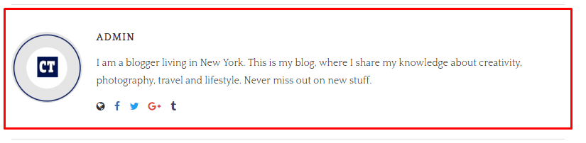
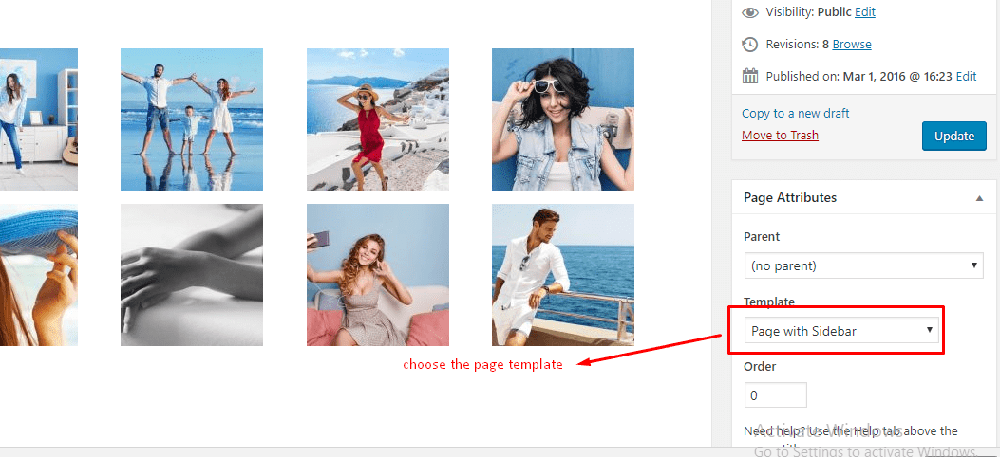
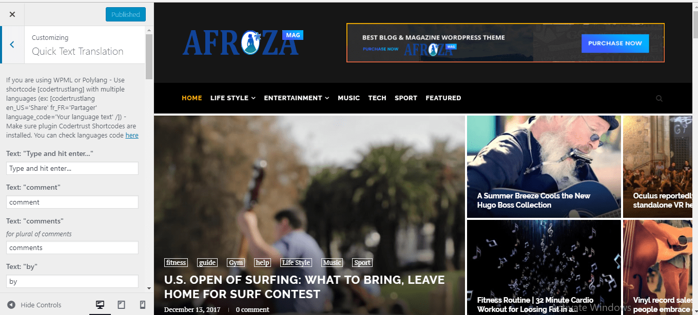

Afroza
multiconcept magazine, blog,personal, portfolio, viral, WP Theme
A Special Thanks to You for Choosing Our Product. This documentation guides you how to use and customize the theme.
multiconcept magazine, blog,personal, portfolio, viral, WP Theme
A Special Thanks to You for Choosing Our Product. This documentation guides you how to use and customize the theme.
Afroza, brings you modern design and neat & clean outlook. Touching the heights of artistic perfection, this multibrand-purpose ecommerce building tool can be used for multibrand ecommerce websites. Afroza is a WooCommerce Wordpress theme designed and developed for use with Wordpress 4.5+ or higher.
Need Help ?
Although,if you do find a problem please notify us immediately through our Help Center so we can ensure it gets fixed as quickly as possible.
Thank you,
The Codertrust Team
If you downloaded "All files and documentation" from themeforest, please extract the zipped package downloaded from ThemeForest to your desktop. In the extracted package you will find Afroza.zip which is the WordPress theme file.
If you downloaded "Installable WordPress file only" from themeforest, you just need use this file for your installation.
You can install the theme one of two ways:
WordPress Login to your admin page, navigate to Apperance > Add New Themes > Upload page. Select the Afroza.zip file.
Press the Install Now button to upload and install the theme.
FTP Extract the Afroza.zip file and upload the extracted folder to the /wp-content/themes/ folder on your server.
After uploading the theme, you must activate it. Navigate to the Appearence > Themes page to activate the theme.
First, please go to admin > Settings > Reading and make sure your settings look like this (Because by default, Afroza theme does not make a page is Homepage):
Based on your site, you can select to import demo.
import demo:Import Full demo content
Go to admin page > Appearance > Install Plguins > Install Plugin CoderTrust Afroza Demo Importer
After that, go to admin page > Appearance > Import Demo Data > Choose a demo you want to import for your site and click "Import" button. Wait for this process done and you can preview your site.
Afroza supports 3 locations for custom WordPress menu:
- Primary Menu
- Topbar Menu
- Footer Menu
For menu setup, navigate to the Appearance > Menus page. Enter a name for your menu and add links to the menu by using the options given on the left sidebar. You can manage your menus using the drag and drop functionality.
After setting up your menu, select the menu you just created from the theme locations drop-down box, scroll down to bottom check to "Main Menu" and hit the "Save" button.
TIP: Read more about WordPress Menus: WordPress Menu User Guide
Go to Appearance > menu > select "Categories" > select any category like on "life style" > Make it is a category mega menu (make sure category you selected has posts & menu item you selected need is top level and this menu item no have child menu items) "life style " Select "rows" when display posts in this category mega menu
Then create child-category under posts > categories
Important Note: Menu item you selected to display category mega menu need to be top level of your menu and this menu item doesn't have any child menu items.
Check these images to know how to create a category mega menu:
Check the images below to know how to do that:
<i class="fa fa-home"></i>For xample: I want to add icon "magic" to my menu, I will change above code to: <i class="fa fa-magic"></i>
Click to images to see larger image
Afroza comes with a straightforward and simply homepage. If you would like to change Homepage layout, you can go to Appearance > Customize > General Options > Homepage Layout.
If you want to change layout for categories page, search page, tag page, archive page, author page... you can go to Appearance > Customize > General Options > Category, Tag, Search, Archive Layout
If you would like to adjust the amount of posts shown per page Homepage, you can go to admin > Appearance > Customize > Homepage Options > Custom Amount of Posts Shown Per Page on Homepage and change the number to value you wanted.
If you would like to adjust the amount of posts shown per page on Archive page (category page, search page, tag page...),you can go to Settings > Reading > Blog pages show at most and change the number to the value as you desired.
Go to Appearance > Customize > "General Options" > "Homepage Layout" > select 'Magazine Style 2 layout' and click save changes
then go to " Homepage Options" > and insert under " List Featured Categories for Magazine Layouts" This option only for Homepage Magazine(style 1 and style 2) layout, copy and paste categories slug you want display above Latest Posts here. Example: You want display categories "Life Style, Travel, Music" above Latest Posts, fill categories slug like "life-style, travel, music" and click save changes
Then go to Posts > Categories > select any category to edit . I would like to edit "sport" Category then "Select Featured Layout for Magazine Layout" When you chose HomePage layout is Magazine Layout, this options for change featured layout for categories display featured and click update
Following images below....
To set up the featured homepage slider you need to do the following steps:
Go to Appearance > Customize > Featured Slider Options > Click enable "Enable Featured Slider"
In "Featured Slider Options", you can see other options which will help you custom sliders as you wanted.
Note with Featured Posts Slider: It's important that the posts appearing in your slider should have a featured image assigned to them, and you should use images for featured images with at least 1170px width & 780px height to get best results.
CoderTrust Slider is a custom slider - It's not based on posts. You can select any images/text display on your slider.
To config CoderTrust Slider, please make sure you activated plugin CoderTrust Slider
And do following steps to config CoderTrust Slider:
1/ Go to admin page > CoderTrust Slider > Add New a Slide ( or more slides )
2/ Go to Appearance > Customize > Featured Slider Options > on "Featured Slider Style" > select "CoderTrust Slider 1" or "CoderTrust Slider 2"
Afroza theme supports a complete AMP for your site.
We've included CoderTrust Afroza AMP plugin in download package from Themeforest ( All files and documentation download ). You can go do download page and re-download "All files and documentation".
After that, extract this download package and open the folder. You can see plugin codertrust-Afroza-amp.zip in plugins folder
Please deactivate all other AMP plugins you have first. Because this plugin supports for you full AMP
Let's install this plugin. When you done, go to Appearance > Customizer AMP and custom your AMP
On AMP, we can't use google adsense codes like normal because AMP use the different way to display google adsense, so you need to modify the google adsense codes to use it the right way on AMP.
Normal Google Adsense codes will look like this:
<script async src="//pagead2.googlesyndication.com/pagead/js/adsbygoogle.js"></script>
<ins class="adsbygoogle center top-ad"
style="display:block"
data-ad-client="ca-pub-1234667890"
data-ad-slot="1234567890"></ins>
<script>
(adsbygoogle = window.adsbygoogle || []).push({});
</script>
You need to copy data-ad-client and data-ad-slot on the above codes:
ca-pub-1234667890And put it to data-ad-client and data-ad-slot of this google adsense codes for AMP - like this:
<amp-ad width=300 height=250
type="adsense"
data-ad-client="ca-pub-1234567890"
data-ad-slot="1234567890"></amp-ad>
When you done, use the codes above to options for AMP google adsense codes
To set up the featured video background you need to do the following steps:
Please go to Appearance > Widgets and settings your widgets. You can drag & drop widgets on the left side to the sidebars on the left/right side for your purpose.
Afroza comes with 11 different custom widgets.
Note:
- To setup Instagram above footer like on our demo, please take a look guide for it in "Footer Instagram" section.
- You can drag & drop any widgets you want to "Footer Column #1", "Footer Column #2", "Footer Column #3" to make 3 columns widgets on the footer.
Afroza comes with 6 different post formats: Standard, Video, Gallery, Music Posts, Quote and Link.
We're using plugin Vafpress Post Formats UI to help you create different posts format. You can install this plugin via Appearance > Install Plugins. After install this plugin, you will see post format tabs above the post title when you edit/ add new a post.
When you write a new post, you need to choose what format your post is and insert the necessary info.
We provide for you multiple layouts to change so you can tailor the look of your post. Please go to Appearance > Customize you can see options for Standard & Classic Post Layout and Other Post Layout. You can hide/show, customize different elements on the post page..
For customzing Single Post, you can go to Appearance > Customize > Single Options to show/hide and customize elements on a single post page.
For get the best result, you should set a featured image for each post and select featured images for your posts with at least 1170px width and 780px height.
To create a "Continue Reading" button on Standard or Classic layout, you can go to Customize > Standard & Classic Layouts Options > check to "Auto Render Post Excerpt" or do like on this image:
On each single post page, you can see an Author Box ( Author Bio )
Click to images to see larger image
You can go to Appearance > Customize > Page Options to check options for your Pages.
If you want to display sidebar/ no sidebar for a special page - You can select page template for that page is "Page With Sidebar" or "Page No Sidebar"
If you want to make a blog page which displays all latest posts, please go to Pages > Add New > Add new a page and choose Template for it is "Custom Blog Page". The "Custom Blog Page" will follow the layout on Customize > General Options > Category, Tag, Search, Archive Layout
Also, when you edit a page, you can scroll down and use more page options there.
Click to images to see larger image
To create a gallery on post/page, please check this video tutorial:
Note: If you want to use gallery feature from Jetpack or anything else - you need to disable gallery feature from this theme via Customize > Single Options > Disable Gallery Feature from This Theme
<p class="mdes">Subscribe my Newsletter for new blog posts, tips & new photos. Let's stay updated!</p>
<p class="mname"><input type="text" name="NAME" placeholder="Name..." /></p>
<p class="memail"><input type="email" id="mc4wp_email" name="EMAIL" placeholder="Email..." required /></p>
<p class="msubmit"><input type="submit" value="Subscribe" /></p>
Afroza use plugin Contact Form 7 to help you create a contact form.
After installed this plugin, go to Contact > Contact Forms > Add New/ Edit a Contact Form and use the following this mark-up and paste it to your form:
<p class="name">[text* your-name placeholder "Name*"]</p>
<p class="email">[email* your-email placeholder "Email*"]</p>
<p class="subject">[text your-subject placeholder "Subject"]</p>
<p class="message">[textarea* your-message placeholder "Your Message"]</p>
<p class="submit">[submit "Submit"]</p>
When you done, use Contact Form 7 shortcode and paste to your posts/pages - where you want to display contact form.
Afroza uses the default WordPress Post Thumbnails function. You can upload one featured image to a post and WordPress will automatically resize it to all of the various thumbnail sizes used throughout the theme.
To set a post thumbnail for your post, go to Posts > Add New/Edit Post > Set Featured Image
The normal upload box will now appear. Upload your image and click "Use as featured image". Now simply close the box.
To get the best results, you should use images for your featured images with at least 1170px width and 780px height.
You can use this website to crop/resize your images before upload it to your site: http://www.picresize.com/batch.php
To use Portfolio function, you need to install plugin CoderTrust Portfolio. You can go to Appearance > Install Plugins > Install & Active this plugin
We provide for you portfolio shortcode, you can see Select shortcode button on your editor tool on Add New/Edit Page. Full portfolio shortcode look like this:
[portfolio style="masonry" cat="" number="-1" filter="true" column="3" all_text="All" /]
Note: In some cases, the permalink doesn't update for portfolio. If you view a portfolio and got a 404 error, please go to admin page > Settings > Permalink > click to "Save Changes" again to update the permalink.
Afroza theme allows you to translate the theme into any language. To translate the theme, please choose one of two ways:
Quick Translation via Customize
Afroza allows you translation text online in customizer. Go to Appearance > Customize > Quick Text Translation translate all text to the text you want. If your site is multiple languages ( use WPML or Polylang ), you can use shortcode "[codertrustlang]" to translate it.
[codertrustlang en_US='Share' fr_FR='Partager' language_code='Your language text' /]
In the shortcode above, en_US & fr_FR is the languages code. You can see the languages code here
Click to images to see larger image
Translation with POEdit
Again, thank you for purchasing Afroza!
We take great pride in creating solid themes and strongly believe in robust customer service practices. If you have a question that neither this documentation file nor ThemeForest's forums can resolve, drop us a line and we'll do our very best to assist you.
Take care!
{kind=link}
{kind=link}
{kind=link}
{kind=link}
{kind=link}
{kind=link}
{kind=link}
{kind=link}
{kind=link}
{kind=link}
{kind=link}
{kind=link}
{kind=link}
{kind=link}
{kind=link}
{kind=link}
{kind=link}
{kind=link}
{kind=link}
{kind=link}
{kind=link}
{kind=link}
{kind=link}
{kind=link}
If you sharing a posts/pages on social media ( Facebook, Twitter,... ) and got the featured images doesn't display or doesn't display correct image. Please do following steps: